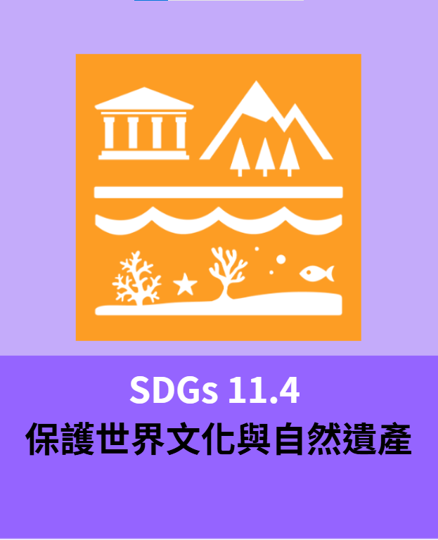
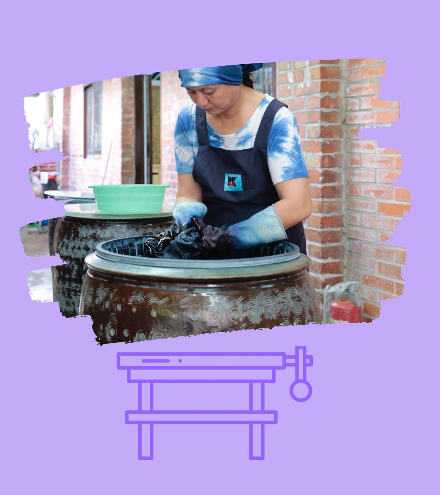
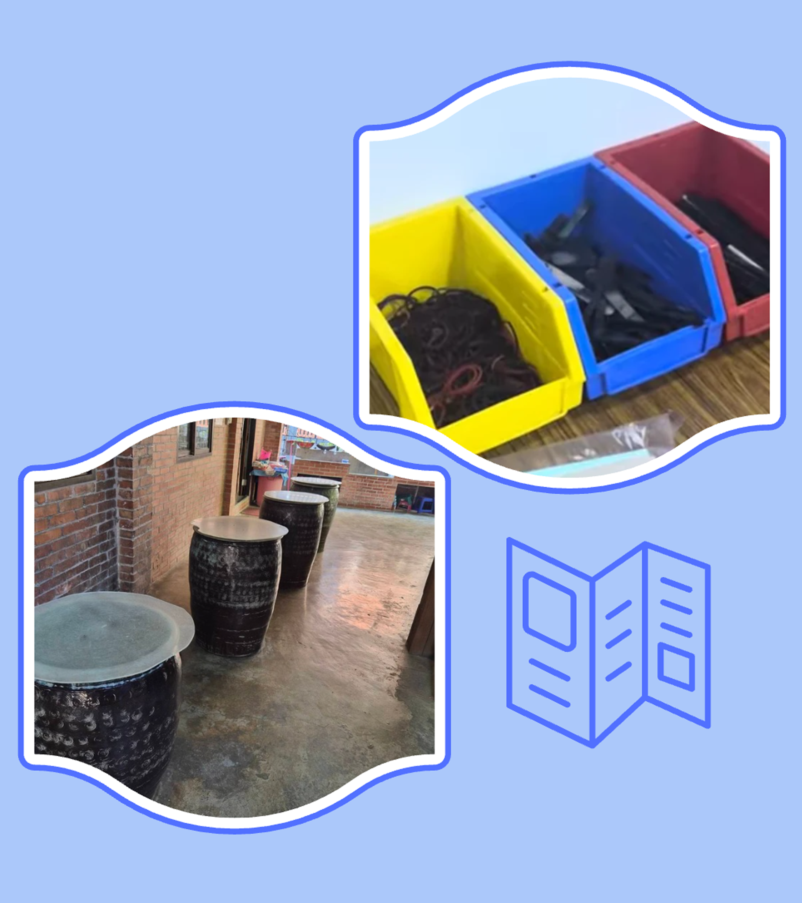
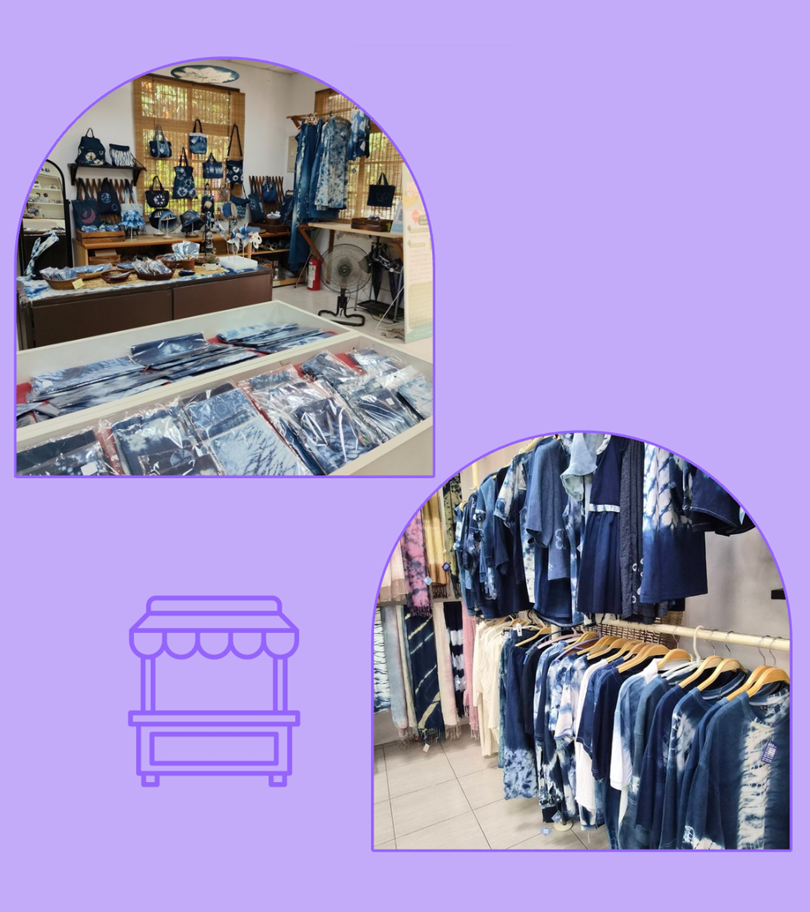
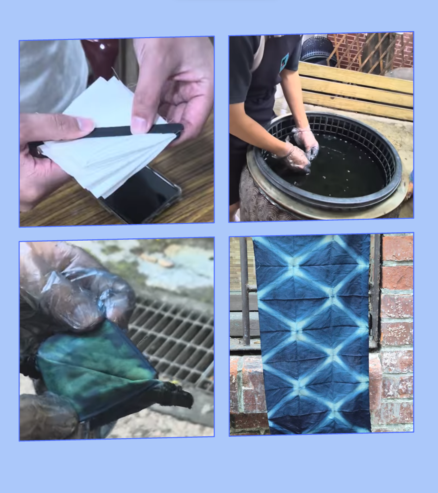
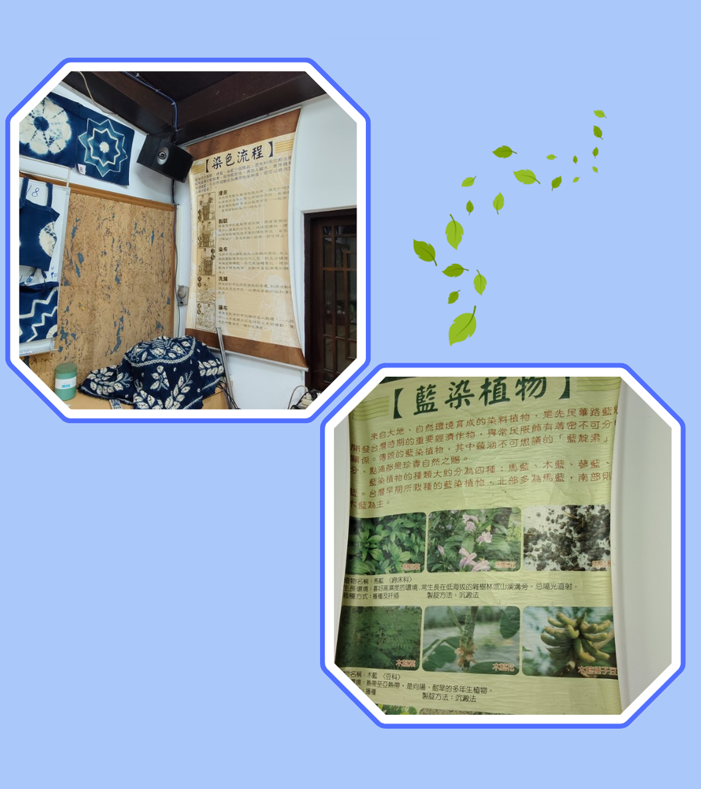
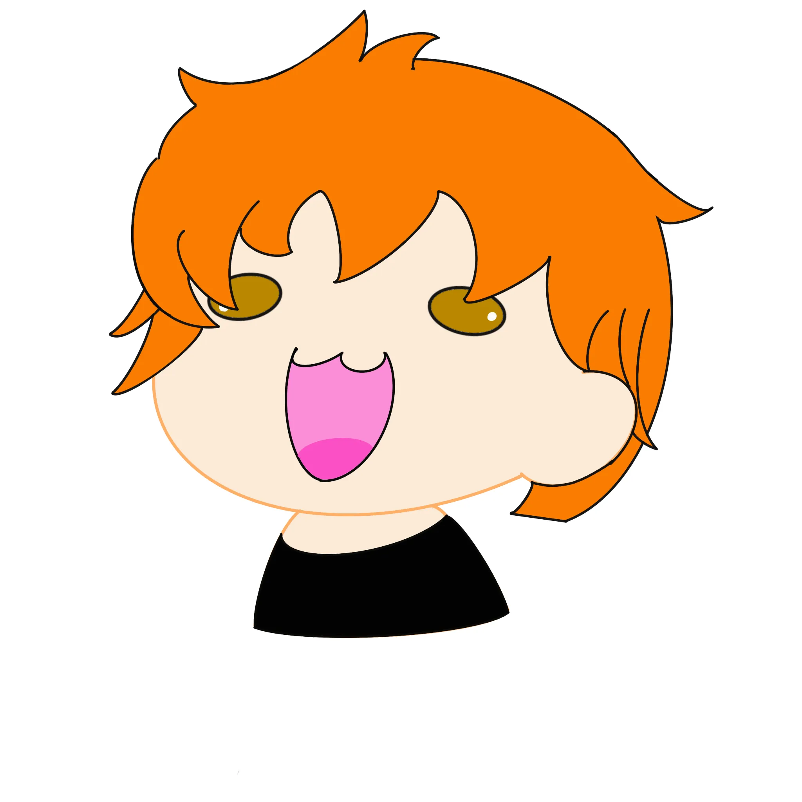
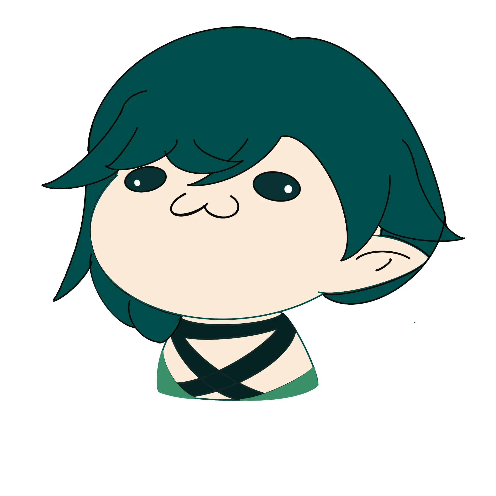
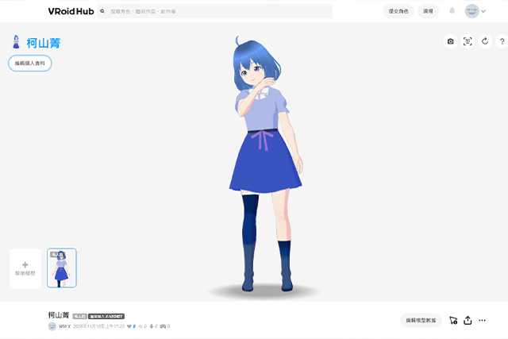

什麼是藍染 穿梭四百年的綠色工藝
什麼是藍染？取之於自然的永續奇蹟
臺灣藍染擁有近四百年的深厚歷史，是極具在地代表性的無形文化資產。藍染堅持使用天然植物（如三峽盛產的「馬藍」）進行染色，從採藍、發酵建藍到絞染，傳統上的製程不添加任何石化化學染劑。
染色後的布料能自然分解並重回大地懷抱，在傳統的製程中，不會對水質與土壤造成任何污染，回應了現代「綠色工藝」的精神，更是聯合國永續發展目標（SDGs 11.4 保護世界文化與自然遺產）的在地實踐範例。
查看更多藍染小知識！


文化的守護者 三峽染工坊
深耕三峽多年，以傳承藍染工藝為目標，持續進行手作教學體驗課程。
職人堅持與營運痛點
教學導向的堅持
工坊透過教學式的手作體驗，堅持「不只是把布料泡泡染液、帶走一件方巾」，希望讓訪客真正理解背後的歷史與化學工藝底蘊。
數位轉型契機
面對年輕客群斷層與「一次性消費」困境，在訪談當中對本組的形象IP寄予期待，期望能透過數位互動降低年輕人接觸傳統工藝的門檻。
文史脈絡與創立故事
清代盛況
三峽民權街舊稱「三角湧街」，因山區盛產馬藍（大菁）且水利便利，清代幾乎家家戶戶參與染布，各坊皆有獨門配方。
式微與復育
日治時期受西服與化學染劑衝擊而中斷數十年，直到在地組織「三角湧文化協進會」為保存無形文化資產，輔導成立了「三峽染工坊（藍染展示中心）」。
服務與體驗
手作體驗
體驗時長約 1~2 小時，含簡介、技法教學與實作，，品項包含大方巾、帆布小提袋、精緻角巾等各類小物。
商品展售
涵蓋棉/絲巾、側背包/束口袋、茶席布、髮夾與平安符等生活工藝品





我們的形象IP 柯山菁
設計理念
隨時代變遷與快時尚的普及，傳統藍染因繁複耗時的手工工序、缺乏數位傳播載體，正面臨技藝斷層的生存危機。
本專題團隊發揮商業與管理群／資料處理科之多媒體與企劃專長，結合 Z 世代盛行的 VTuber 與 ACG 次文化，設計出形象代言人「柯山菁」，期盼以輕量、有趣的數位語言降低年輕人接觸傳統文化的門檻，為老工藝注入全新生命力！



一個探索藍染工藝的奇幻旅程
角色的誕生與應用

3D 角色建模
採用 VRoid Studio 將柯山菁由 2D 原案立體化。精準還原藍染工藝特有的藍白配色與服飾紋理，並透過面數與骨架優化（VRM 格式），確保角色在跨平台 WebAR 與 3D 導覽時能順暢載入與呈現。

數位動態展示
結合 Live2D 技術進行多層次拆分與骨架拆解，賦予柯山菁豐富的眨眼、微笑與招呼動作。


柯山菁帶你遊三峽 AR 實境導覽
想親自走訪三峽民權老街與舊染坊遺跡嗎？點擊右方按鈕開啟 AR 相機，讓虛擬精靈柯山菁突破次元壁陪伴在身邊，展開一場身歷其境的實境探險吧！
遊戲 天地
關於我們 研究動機與目的
打破空間與世代藩籬，重燃在地工藝薪火
臺灣藍染在 2010 年正式登錄為重要無形文化資產，然而傳統工序繁瑣費工，導致青年世代接觸意願相對低下。根據本團隊前置問卷統計調查，發現社會大眾對傳統藍染面臨兩大核心困境：高達 75.1% 的受訪民眾認為「藍染商品購買與體驗管道太少」，且僅有 35.1% 的民眾自認了解藍染工藝背景。
為了打破空間與資訊隔閡，我們希望運用數位平台與形象 IP「柯山菁」串聯線上體驗與實體工坊，為傳統在地產業注入新型態經營活力與傳承動力。
常態購買或手作管道
不知其詳細原理
四大研究目的
滑鼠移入或點擊各項研究目的，查看更多內容